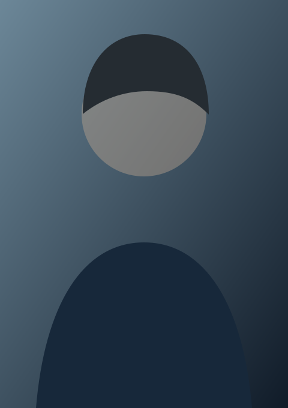

AGHEALTH

MEDICINA INTEGRATIVA · LONGEVIDADEDr. André Gustavo
Dr. André Gustavo
Gumz Eichstaedt
Medicina Integrativa | Nutrologia
Longevidade | Neurodiet™
Saúde, longevidade, performance e prevenção com ciência.
Conteúdo informativo. Condutas individualizadas exigem avaliação profissional.